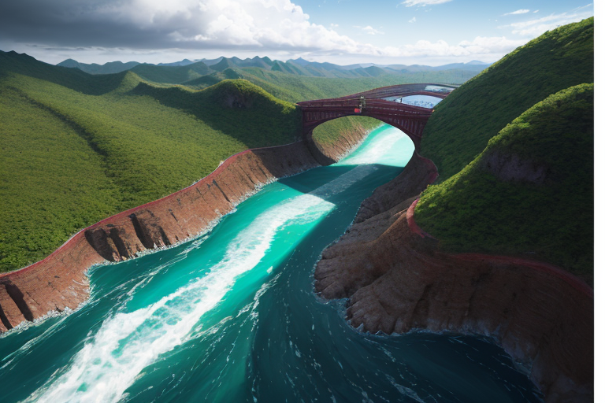
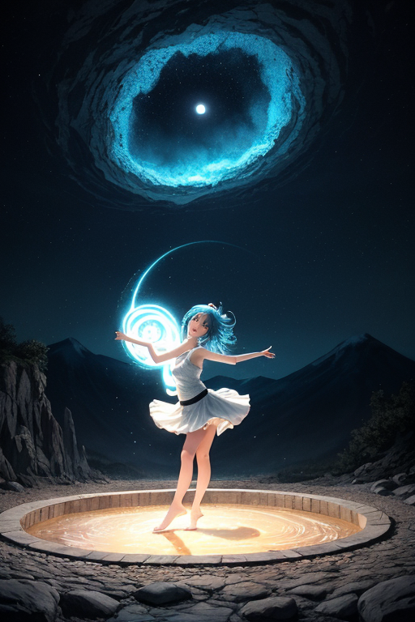
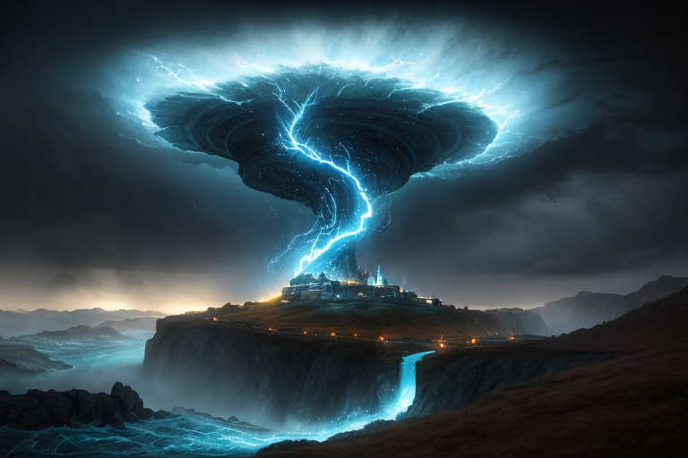
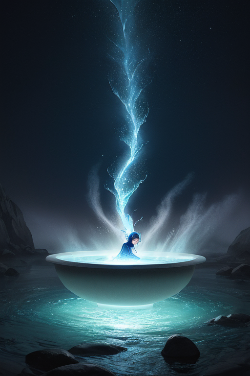
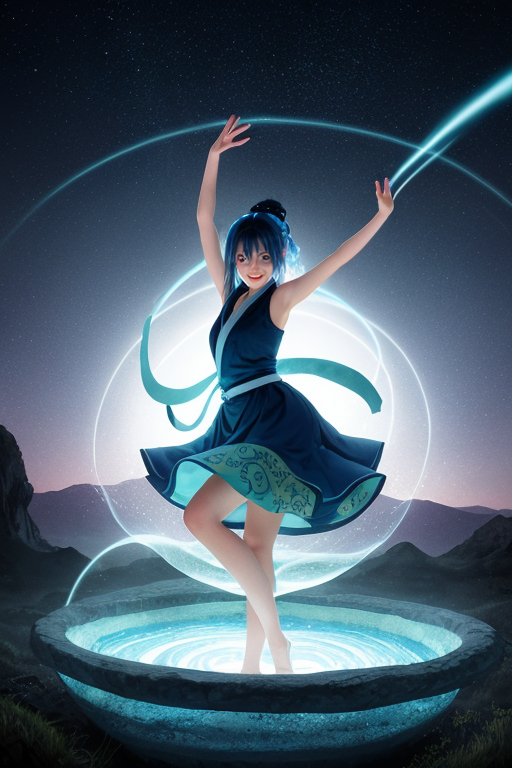

第一章 現実の徳島
あなたはまだ気づいていない。この土地にも、王がいることを。
鳴門海峡の渦潮は、今日も規則正しくうねり、潮を飲み込む。観光船の歓声は、その圧倒的な力の前ではかすんで聞こえる。ここは、世界有数の海流がぶつかり、巨大なエネルギーが絶えず生まれ、消える場所だ。その渦の底深く、何かが、長い眠りについている。それは「封印」と呼ばれる。
祖谷のかずら橋は、静かに谷川の上に架かる。揺れる足元の下には、深い緑の淵が口を開けている。観光客の笑い声が流れるが、地元の古老は、この橋が単なる観光資源ではないことを知っている。かつて、この地を揺るがすほどの「何か」を封じる結界の一部として、編まれたのだと。
眉山から徳島市街を眺めれば、平穏な日常が広がる。しかし、地質学者は警告する。この土地の下には、複雑に絡み合った活断層が潜み、いつ大きな歪みを解放するかわからない、と。
藍染めの深い藍色は、この土地の記憶を吸い込んだように沈んでいる。阿波おどりの太鼓の響きは、地面を伝わり、眠るものの鼓動と呼応するかのようだ。誰もが、何かが「ここ」に封じられていることを、ぼんやりと感じている。巻き込まれるかもしれないという予感を。ただ、それが何なのか、思い出せないでいる。

第二章 歪みの兆候
眉山の山頂から徳島市街を望むと、街灯の明かりが藍色の闇に浮かぶ。その静かな夜景の下で、ヴォルテラは微かな違和感を報告した。「主よ、地脈の流れに乱れが生じています。特に、大歩危小歩危の渓谷沿いで」
渦王トクシマリアは目を閉じ、王国全体に張り巡らされたエネルギーの網を感じ取った。確かに、祖谷のかずら橋の近くを流れる清流のリズムに、かすかな「ずれ」がある。それは、長年にわたり幾重にも巻き付けられてきた封印の結び目が、ほんの少し緩み始めた音だった。阿波おどり会館から聞こえてくる祭囃子が、なぜか今夜は焦りのように聞こえる。
地中深く、複雑に絡み合った活断層は、ゆっくりと目覚めの準備をしていた。王が調整できるのは、ほんのわずかな時間の遅れ、ほんの少しの衝撃の分散だけだ。巻き込まれる運命そのものを変えることはできない。彼女の足元で、地面がかすかに、かすかに温かさを帯びているのを感じた。

第三章 王の葛藤
眉山の頂で、トクシマリアは目を閉じていた。足下から伝わる微かな振動は、封印の下でうごめく巨大なエネルギーの脈動だ。解放すれば、この一帯は瞬時にして「渦」に飲み込まれる。維持すれば、歪みは別の場所で、より制御不能な形で噴出するかもしれない。
「王よ、決断を。」ヴォルテラの声が焦りを帯びる。妖精たちは既に限界だった。阿波おどりのリズムは乱れ、藍染めの池には理由なく渦が立つ。
彼女は思い出した。かずら橋で足を踏み外しかけた旅人の、それでも前に伸ばした手。大歩危の激流で翻弄されながら、必死に岸を目指す小舟。巻き込まれることは、終わりではない。渦の中でもがき、それでも立とうとする意志こそが、この土地の底力だった。
「…解放する。」トクシマリアが呟いた。感情という名の渦が、胸の中で初めて完結した瞬間だった。災いを防ぐのではなく、それに立ち向かう人々の一瞬を、ほんの少しだけ長くするために。彼女は封印の結び目に、自らの手をかけた。

第四章 妖精との対話
眉山の山頂。夜明け前の闇が濃い。トクシマリアの手のひらに、ヴォルテラとアワナミが微かに光る。
「この封印は、王の暴走を防ぐためでした。」ヴォルテラの声は、渦潮の底から聞こえるような深みを持つ。「かつて、この地の感情の昂ぶりが、王の制御を超えた。阿波おどりの熱狂、藍染めの深い想い、全てがエネルギーとなり、歪みを増幅しかけた。」
アワナミが舞うように言葉を継ぐ。「祖谷の蔓橋は、揺れても落ちない結び目。大歩危小歩危の急流は、巻き込まれても流されない岩。この土地は、『巻き込まれても立てる』ことを、地形そのもので示してきた。だからこそ、王の力もまた、『封じる』ことで守られてきたのです。」
トクシマリアは、掌の光を見つめた。封印は、この国を守るための、自分自身への枷だった。
「でも今、あなたは変わった。」ヴォルテラが言う。「感情を知った王は、もはや暴走などしない。あなたは、渦そのものになった。」
東の空が藍色から白へと溶け始める。封印は、解かれるべき時を待っていた。

第五章 微調整と余韻
眉山の頂で、トクシマリアは両腕を広げた。藍と白の光が彼女の全身から、そして山肌から湧き上がり、空へと螺旋を描く。それは暴走ではなく、制御された放出だった。地中に蓄えられた歪みのエネルギーを、自らの体を通して、ゆっくりと大気へ拡散させる微調整。阿波おどりのリズムが、彼女の鼓動と同期する。
ヴォルテラとアワナミが彼女の周りを舞い、光の流れを整える。祖谷の深い緑、大歩危小歩危の奇岩、鳴門の海へと、光の波紋は拡がって消える。封印は修復されない。彼女自身が、新たな調整弁となった。
代償は、この感情の重さだ。喜びも昂揚も、全てが地殻の軋みと共振する。彼女は微かに笑った。巻き込まれることこそが、立つことの証明だと、この土地は教えてくれた。
光が収まり、朝日が昇る。徳島の町並みに、日常が戻っていく。ほんの少し、揺れが優しく、波の到達が遅れただけの、誰にも気付かれない平穏な朝。
あなたの町にも、王がいる。